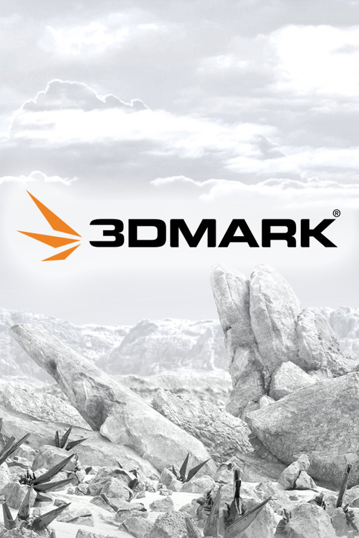

3DMark
3DMark
Details
|  | |
| Playtime | Not Played |
| Last Activity | Never |
| Added | 25.12.2023 22:38:23 |
| Modified | 23.11.2024 16:35:41 |
| Completion Status | Not Played |
| Library | Steam |
| Source | Steam |
| Platform | PC (Windows) |
| Release Date | |
| Community Score | 91 |
| Critic Score | |
| User Score | |
| Genre | Utilities |
| Developer | UL Solutions |
| Publisher | UL Solutions |
| Feature | Achievements Leaderboards VR VR Gamepad VR Keyboard / Mouse VR Room-Scale VR Seated VR Standing |
| Links | Community Hub Discussions Guides News Store Page PCGamingWiki Achievements |
| Tag | 3D Benchmark Narzędzia użytkowe Programy |
Description
Gry na komputerach PC to ciągła pogoń za wydajnością, niekończący się cykl ulepszania, overclockingu i wyciskania ze sprzętu większej liczby klatek, wyższych rozdzielczości i lepszej jakości efektów graficznych.
3DMark to niezbędne narzędzie w tych poszukiwaniach. Od ponad 20 lat program 3DMark jest najczęściej wybierany przy badaniu, testowaniu i porównywaniu wydajności komputerów PC.
Z pewnością pojawi się nowa gra, która będzie wymagać większej wydajności od twojego sprzętu. Z pewnością pojawi się też nowy sprzęt, który zapewni większą wydajność w twoich grach. Cykl trwa dalej. Witamy w 3DMark, benchmarku dla gracza.


3DMark zawiera wszystko, czego potrzebują gracze do przeprowadzania benchmarków i porównywania wydajności komputerów. Obejmuje specjalnie opracowane testy do wszystkich rodzajów komputerów, od hiperlekkich laptopów po stacjonarne kombajny do gier. 3DMark zaproponuje najlepszy benchmark do twojego sprzętu.
3DMark sprawdza wydajność karty graficznej i procesora systemu, renderując w czasie rzeczywistym bardzo wymagające sceny przypominające gry. Im szybciej działa benchmark, tym lepszy wynik. Teraz zaczyna się przygoda. Co można zrobić, aby uzyskać lepszy wynik?
Rozpocznij od porównania wyniku 3DMark z wynikami innych systemów z tym samym sprzętem. Wyniki niższe niż średnia mogą wskazywać na problem z chłodzeniem, konfiguracją lub wadliwymi podzespołami. Wyniki wyższe niż średnia pokazują potencjał overclockingu danego sprzętu. A jeśli zastanawiasz się, jak wynik 3DMark ma się do rzeczywistej wydajności w grach, program pokazuje również liczbę klatek na sekundę, jakiej można się spodziewać w popularnych grach.
Teraz przekonaj się, jaką wydajność możesz uzyskać na swoim systemie. Zaktualizuj sterowniki. Zaktualizuj Windows. Sprawdź różne ustawienia systemowe. Uruchamiaj 3DMark po każdej zmianie, aby śledzić postępy. Zdiagnozuj wąskie gardła swojego systemu i porównaj wyniki 3DMark, aby lepiej wybrać kolejne ulepszenie. Pytaj o rady, dziel się wskazówkami i zaprezentuj swój sprzęt w centrum społeczności 3DMark na Steam.

Oveclocking to sztuka, która wymaga umiejętności i precyzji. Celem jest wyciśnięcie każdej kropli wydajności z karty graficznej i procesora. Nagrodą jest zwiększenie wydajności bez kolejnych wydatków oraz satysfakcja z uzyskania wydajności wyższej niż standardowa dla danego sprzętu.
3DMark to niezbędne narzędzie dla overclockerów. Uruchom 3DMark przed i po overclockingu, aby zmierzyć zwiększenie wydajności. Stosuj własne ustawienia benchmarków, aby zbadać granice wydajności swojego komputera. Zwiększaj lub zmniejszaj wymagania testów 3DMark, zmieniając rozdzielczość i inne ustawienia.
Uruchom testy obciążeniowe 3DMark, aby sprawdzić stabilność przyspieszonych elementów i skuteczność chłodzenia. Testy obciążeniowe 3DMark działają w pętli, powodując duże obciążenie systemu przez czas dłuższy niż standardowy benchmark.
Rzuć wyzwanie znajomym, aby uzyskać najwyższy wynik 3DMark lub walczyć o główne lokaty w tabelach wyników 3DMark na Steam.

Jeśli gry na PC to twoja pasja, nie ma nic lepszego niż zbudowanie własnego komputera. A jeśli sam go złożysz, nic nie wywołuje większych emocji niż chwila, gdy włączasz go po raz pierwszy. Czy się uruchomi? Czy wszystko będzie działać prawidłowo? Czy budujesz cały system od zera, czy też wymieniasz jakiś podzespół, 3DMark na pewno ci się przyda.
Uruchom 3DMark i porównaj wynik swoich testów z testami podobnych systemów, aby mieć pewność, że twoja maszyna działa prawidłowo. Szczegółowe wykresy monitoringu sprzętowego pokazują, jak zmieniają się obciążenie procesora i karty graficznej, temperatura i prędkość zegara podczas działania benchmarku – co pozwala wykrywać problemy z konfiguracją.
Skorzystaj z testów obciążeniowych 3DMark, aby sprawdzić stabilność systemu i wykryć wadliwe podzespoły, póki są jeszcze objęte gwarancją. Testy obciążeniowe to również doskonały sposób, aby sprawdzić i zoptymalizować działanie chłodzenia systemu. Prawidłowo zbudowany komputer PC z odpowiednim chłodzeniem powinien zapewniać pełną wydajność przez cały czas działania testu obciążeniowego 3DMark.
3DMark może również pomóc, gdy planujesz ulepszenie sprzętu. Możesz przeszukiwać i porównywać wyniki testów najnowszych kart graficznych i procesorów na stronie 3DMark, aby znaleźć modele, które zapewniają najlepszą wydajność przy twoim budżecie.

Granie na PC ciągle się zmienia, podobnie jak 3DMark. Co roku dodajemy nowe benchmarki, testy i funkcje. Regularnie aktualizujemy 3DMark, aby można było testować najnowszy sprzęt do gier na PC. Gdy dziś zakupisz 3DMark, przez siedem lat będziesz korzystać z ciągłego rozwoju, aktualizacji i ulepszeń.

3DMark to niezbędne narzędzie w tych poszukiwaniach. Od ponad 20 lat program 3DMark jest najczęściej wybierany przy badaniu, testowaniu i porównywaniu wydajności komputerów PC.
Z pewnością pojawi się nowa gra, która będzie wymagać większej wydajności od twojego sprzętu. Z pewnością pojawi się też nowy sprzęt, który zapewni większą wydajność w twoich grach. Cykl trwa dalej. Witamy w 3DMark, benchmarku dla gracza.
3DMark zawiera wszystko, czego potrzebują gracze do przeprowadzania benchmarków i porównywania wydajności komputerów. Obejmuje specjalnie opracowane testy do wszystkich rodzajów komputerów, od hiperlekkich laptopów po stacjonarne kombajny do gier. 3DMark zaproponuje najlepszy benchmark do twojego sprzętu.
3DMark sprawdza wydajność karty graficznej i procesora systemu, renderując w czasie rzeczywistym bardzo wymagające sceny przypominające gry. Im szybciej działa benchmark, tym lepszy wynik. Teraz zaczyna się przygoda. Co można zrobić, aby uzyskać lepszy wynik?
Rozpocznij od porównania wyniku 3DMark z wynikami innych systemów z tym samym sprzętem. Wyniki niższe niż średnia mogą wskazywać na problem z chłodzeniem, konfiguracją lub wadliwymi podzespołami. Wyniki wyższe niż średnia pokazują potencjał overclockingu danego sprzętu. A jeśli zastanawiasz się, jak wynik 3DMark ma się do rzeczywistej wydajności w grach, program pokazuje również liczbę klatek na sekundę, jakiej można się spodziewać w popularnych grach.
Teraz przekonaj się, jaką wydajność możesz uzyskać na swoim systemie. Zaktualizuj sterowniki. Zaktualizuj Windows. Sprawdź różne ustawienia systemowe. Uruchamiaj 3DMark po każdej zmianie, aby śledzić postępy. Zdiagnozuj wąskie gardła swojego systemu i porównaj wyniki 3DMark, aby lepiej wybrać kolejne ulepszenie. Pytaj o rady, dziel się wskazówkami i zaprezentuj swój sprzęt w centrum społeczności 3DMark na Steam.
Oveclocking to sztuka, która wymaga umiejętności i precyzji. Celem jest wyciśnięcie każdej kropli wydajności z karty graficznej i procesora. Nagrodą jest zwiększenie wydajności bez kolejnych wydatków oraz satysfakcja z uzyskania wydajności wyższej niż standardowa dla danego sprzętu.
3DMark to niezbędne narzędzie dla overclockerów. Uruchom 3DMark przed i po overclockingu, aby zmierzyć zwiększenie wydajności. Stosuj własne ustawienia benchmarków, aby zbadać granice wydajności swojego komputera. Zwiększaj lub zmniejszaj wymagania testów 3DMark, zmieniając rozdzielczość i inne ustawienia.
Uruchom testy obciążeniowe 3DMark, aby sprawdzić stabilność przyspieszonych elementów i skuteczność chłodzenia. Testy obciążeniowe 3DMark działają w pętli, powodując duże obciążenie systemu przez czas dłuższy niż standardowy benchmark.
Rzuć wyzwanie znajomym, aby uzyskać najwyższy wynik 3DMark lub walczyć o główne lokaty w tabelach wyników 3DMark na Steam.
Jeśli gry na PC to twoja pasja, nie ma nic lepszego niż zbudowanie własnego komputera. A jeśli sam go złożysz, nic nie wywołuje większych emocji niż chwila, gdy włączasz go po raz pierwszy. Czy się uruchomi? Czy wszystko będzie działać prawidłowo? Czy budujesz cały system od zera, czy też wymieniasz jakiś podzespół, 3DMark na pewno ci się przyda.
Uruchom 3DMark i porównaj wynik swoich testów z testami podobnych systemów, aby mieć pewność, że twoja maszyna działa prawidłowo. Szczegółowe wykresy monitoringu sprzętowego pokazują, jak zmieniają się obciążenie procesora i karty graficznej, temperatura i prędkość zegara podczas działania benchmarku – co pozwala wykrywać problemy z konfiguracją.
Skorzystaj z testów obciążeniowych 3DMark, aby sprawdzić stabilność systemu i wykryć wadliwe podzespoły, póki są jeszcze objęte gwarancją. Testy obciążeniowe to również doskonały sposób, aby sprawdzić i zoptymalizować działanie chłodzenia systemu. Prawidłowo zbudowany komputer PC z odpowiednim chłodzeniem powinien zapewniać pełną wydajność przez cały czas działania testu obciążeniowego 3DMark.
3DMark może również pomóc, gdy planujesz ulepszenie sprzętu. Możesz przeszukiwać i porównywać wyniki testów najnowszych kart graficznych i procesorów na stronie 3DMark, aby znaleźć modele, które zapewniają najlepszą wydajność przy twoim budżecie.
Granie na PC ciągle się zmienia, podobnie jak 3DMark. Co roku dodajemy nowe benchmarki, testy i funkcje. Regularnie aktualizujemy 3DMark, aby można było testować najnowszy sprzęt do gier na PC. Gdy dziś zakupisz 3DMark, przez siedem lat będziesz korzystać z ciągłego rozwoju, aktualizacji i ulepszeń.
Benchmarki
- Solar Bay — Międzyplatformowy benchmark raytracingu Vulkan w grach na urządzeniach z systemem Windows i Android.
- Time Spy — benchmark DirectX 12 do komputerów do gier
- Time Spy Extreme — benchmark do gier 4K z DirectX 12
- Port Royal — benchmark raytracingu w czasie rzeczywistym
- Night Raid — test DirectX 12 do komputerów ze zintegrowanym układem graficznym
- Wild Life — wieloplatformowy benchmark do laptopów i tabletów
- Wild Life Extreme — wieloplatformowy test do laptopów i tabletów
- Fire Strike — benchmark DirectX 11 do komputerów do gier
- Fire Strike Extreme — benchmark DirectX 11 do komputerów do gier
- Fire Strike Ultra — benchmark do gier w rozdzielczości 4K z DirectX 11
- Testy obciążeniowe karty graficznej — sprawdź niezawodność i stabilność swojego komputera
- CPU Profile — benchmarki najnowszych procesorów
Testy funkcji
- Test funkcji DirectX Raytracing
- Test funkcji Mesh Shader
- Test funkcji PCI Express
- Test funkcji Sampler Feedback
- Test funkcji VRS
- Test funkcji NVIDIA DLSS
- Test funkcji Intel XeSS
- Test funkcji AMD FSR
Funkcje
- Własne ustawienia benchmarków
- Szacunkowe wyniki wydajności gier
- Niezależna instalacja testów
- Opcja pomijania demonstracji benchmarku
- Lokalny zapis wyników
- Przetestuj swój komputer PC przy użyciu benchmarków Time Spy, Night Raid oraz Fire Strike.
- Inne benchmarki, funkcje i ustawienia są zablokowane.